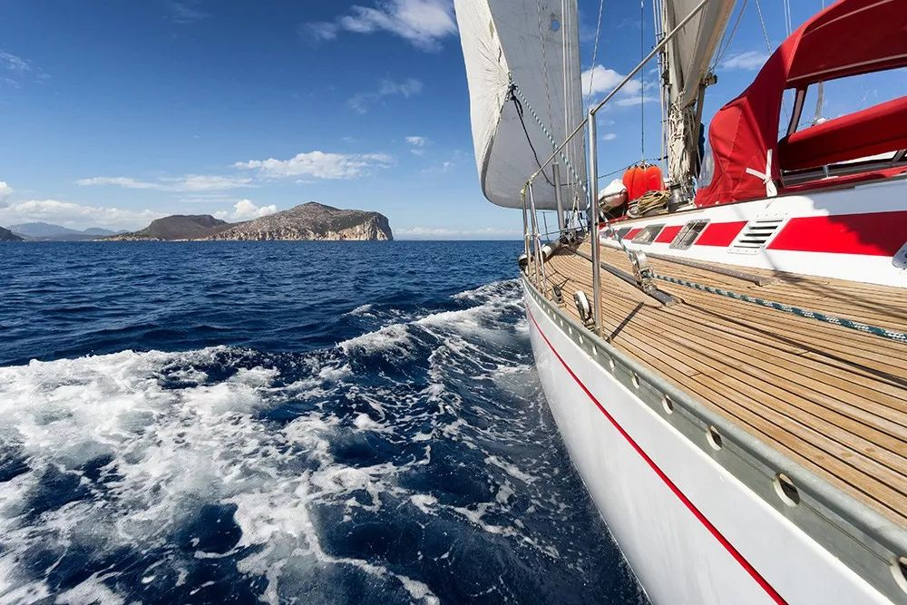

武汉封城后，我每天坐志愿者的车上下班
原文链接 备份链接 “ - 疫 情 之 下 - 武汉的疫情就像一簇紧簇的乌云，笼罩在每一个人的心头。但所幸，在这个受伤的城市中，在每台志愿者车里，在疲于奔波的路上，总有那么一群可爱的人，温暖着我们前线医护工作者的心。 ” 1 2020年 …
南冥有鱼/作者
安东/编辑
白桦/审核
新冠肺炎疫情依旧严峻，所有人都在提心吊胆，气氛阴沉。
日本钻石公主号在海上漂行，禁止游客离船上岸，据报道，目前已有14名中国游客感染。
今天故事的主人公也和大海有关，他是一名携带HIV的船员，疫情蔓延开来时他正在航行且药物即将中断。就让我们用国豪来称呼他吧。

我们能感受到国豪当时的处境是多么绝望，就像所有在疫情中因为各种不可抗力快要断药的艾友一样，毕竟药就是命。国豪的妻子在陕西联系到白桦林，情绪焦急万分，她说过不想看到丈夫因为断药而导致可能的耐药风险。羡慕国豪能有这样一位爱他的妻子，幸或不幸，认定了就是一生。
接到求助，白桦林工作人员一方面安慰他的妻子，答应帮助他们尽力解决断药的问题；一方面开始利用白桦林庞大的标签搜寻可以提供帮助的病友。白桦林自成立以来，已在全世界范围内陆续标注了14000多名艾友的坐标，网络互联互助的爱心平台在疫情中发挥了重要作用。
得知国豪将在几天后短暂停留新加坡的一处港口，我们第一时间与新加坡当地的白桦林骨干成员取得了联系，逐步协调药物采购配送的问题，然而，层层障碍接踵而来。

首先，新加坡对艾滋病患者的药品管理非常严格，想要拿到药必须患者亲自找医生开处方，但是每次只能够获取半个月的药物。
于是，我们与志愿者开始寻找当地的仿制药渠道。由于我们的志愿者未使用过仿制药，此番寻找着实费了一番力气，好在最终为国豪找到了一款仿制药物，在疗效和安全性上可以替代国豪原先的药物组合。
如何将药送到国豪的手中成为了接下来的难题。疫情严重，中国籍船员无法上岸，我们的志愿者也不能进入港口与H交接。最终，我们尝试与当地时常为船员提供生活物资转运的中介公司取得了联系，希望能够通过他们为国豪送药。
虽然与中介达成了合作，但考虑到国豪的隐私，我们无法通过快递给中介寄药，因为在新加坡寄送药品必须实名标注药品名称，并且要提供处方，最终还是由志愿者亲自将药包递交到了中介手中。其实，在每一次接到求助后，最辛苦的就是我们各地的志愿者。他们是艾友中的一员，只是出于单纯的同道相助，他们总是尽心尽力地去解决每一个难题，也正是这个群体里的每个人都是这样无私的奉献精神才让白桦林这个用爱汇聚的平台更加坚实，也让更多曾在无助中的人感受到了群体的力量与温暖。
这样的跨区域求助，每个环节都充满了未知的难度。比如这次的费用结算问题，看似转账这样简单的程序在国外并未普及微信、支付宝的情况下显得万般艰难。当时的情况下必须由中介在其中进行转账过渡，小小交易也是要拐个十八道弯。国豪的妻子始终在想各种办法，虽然人在陕西却协调三地，最终她利用银行境外汇款的办法给志愿者汇去了三个月药品的费用。

这样一场接力以国豪拿到这三个月的药为终点，国内外三地的沟通互助无疑是一场及时雨，解决了国豪的极大困扰。国豪的妻子说，是白桦林救了自己丈夫一命，他们夫妻万分感激，无以言表。白桦老师说，从事志愿者工作已经有些年头了，这中间也遇到过挫折，也有差点坚持不下去的时候，但当听到患者发自内心的感谢之声，看到他们满意的笑容之时，我又有了坚持做好志愿者工作的动力，我觉得之前的一切付出都是值得的，那是一种发自心底的温暖与骄傲。
我们想把最近疫情中遇到的一些故事进行整理，更想表达一种心情，就是我们需要在一起。有人说，每个人都是一座孤岛，艾滋病患者更是如此，但当遇到疫情这样的危机时刻，如果连我们每个人都无法联结、互助，那还有多少指望和期盼？白桦林一直在努力构建一张网，一张全体艾滋病患者能够守望互助的网，艾后有你，依旧爱你。

原文链接 备份链接 “ - 疫 情 之 下 - 武汉的疫情就像一簇紧簇的乌云，笼罩在每一个人的心头。但所幸，在这个受伤的城市中，在每台志愿者车里，在疲于奔波的路上，总有那么一群可爱的人，温暖着我们前线医护工作者的心。 ” 1 2020年 …
原文链接 备份链接 作为江西援鄂医疗队的一员，“田螺”第一次和新冠肺炎病人近距离接触，就是一场紧迫而危险的大抢救。 那是在武汉第五医院的重症监护室，一位病人的血氧饱和度骤然下降，造成呼吸困难，病人脸上虚汗连连，检测仪发出的刺耳警报声就像死 …
原文链接 备份链接 ********** *****在武汉，登记在册的听障人士有1.3万人。对这个群体而言，听力的阻隔带来不少困难，他们资讯获取滞后，对疫情的反应比正常人慢，防护物资也告急，甚至求援都成难题。武汉市聋协2月11日的统计中， …
原文链接 备份链接 在小区门口、在居委会、在火车站出口……这些机关干部的身影活跃在在各处。 记者 | 应 琛 “您好，请出示一下出入证。再来测量一下体温，谢谢”，“您是到这里看望父亲的对吗？请到这边填一下登记表，再测量一下体温”……这些 …
原文链接 备份链接 虽然我自己是公务员，但我客观地评价，在这次抗击疫情的过程中，我们国家的这台大的机器，在应对突发危机的时候，运转起来还是很不错的。 口述 | 徐 理（化名） 整理 | 周 洁 我是一名普通的基层公务员，今年疫情发生后， …